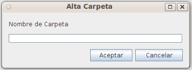

This form allows to create folders in the repository introducing only the name. The folder will be created under the actual forlder. The security (ACL) will be inherited from the container folder

If you need to create a folder selecting the type and introducing detailed information you should use: Add extedded Folder
In the event of an error (lack of user permissions, communication error, incorrect date, etc.), the operation is canceled and the user will communicate the reason for the error.